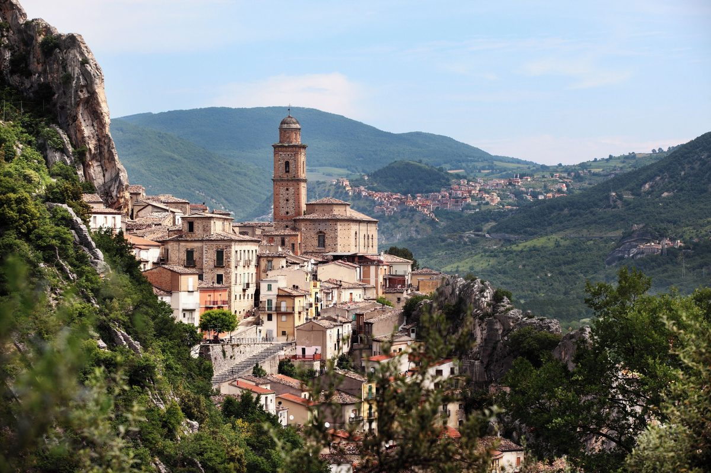

Day 11 — Villa Santa Maria — Mom's Birthplace
Sunday, May 31, 2026

PLACES & MAP LINKS — tap any place to open in Google Maps
🏘️ Mom's birthplace — 10:30 AM — 📍 Villa Santa Maria, Chieti
Small mountain town. 'Paese dei cuochi' — town of cooks.
⛪ Mass — TBD time — 📍 Villa Santa Maria parish church
Confirm Mass time with parish via orarimesse.it before trip.
🍴 Lunch — ~12:30 PM — 📍 Hotel Santa Maria restaurant
Main square. Owner shares restaurant history personally. Mention Mom was born here.
🍴 Backup — 📍 L'Onofrio Caffè (lunch backup)
Piazza Guglielmo Marconi 1. Same square.
SIDE QUESTS
⚡ 📍 Walk through Villa Santa Maria centro storico (parents can join — slow pace)
Explore the old streets of Mom's town. Uneven cobblestones — slow pace, frequent breaks. The point is being together at the places memory lives.
⚡ 📍 Visit family cemetery if appropriate (parents can join)
Italian cemeteries are central to small-town life. Family graves may be here. Worth asking Mom in advance.
CONTACTS
Hotel Santa Maria: +39 0872 944417
L'Onofrio Caffè: +39 349 509 6113
NOTES
- The most meaningful day of the trip. Mom's birthplace + San Francesco Caracciolo (patron saint of Italian chefs).
- When calling Hotel Santa Maria: mention Mom was born in Villa Santa Maria.
- Call parish first — confirm Sunday Mass time before booking lunch.
- Italian cemeteries are central to small-town life — visiting could be deeply meaningful.
- Ask Mom about specific places, names, family contacts before trip.
- Drive ~1 hour from Castello di Septe through Sangro valley.
- Quiet dinner at Castello di Septe in evening before wedding day.